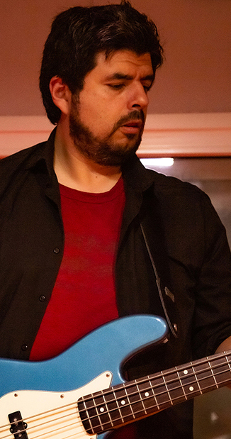

Un antes y Despúes

La dificultad en este pais para conseguir un primer trabajo desde lo que estudiamos nos era imposible y decidimos de formar un estudio virtual de diseño para empezar a generar un poco de experiencia, pero lo unico que conseguimos fueron las primer juntadas de musica.
Mientras el trabajo se hacia esperar, estas sapadas en casa se fueron haciendo mas frecuentes y la idea de empezar a formar una banda y trasladar esto a una sala de ensayo cada vez se hacia mas fuerte.
Lucas es de San Telmo, Gerard de Avellaneda y Martin de Adrogue, que nos comentaba que se habia separado de la banda anterior y nos podia conseguir a su bateriste, gus. Estabamos cerca y todo empezaria a darle un poco de forma.
Gerard como cantante se hizo cargo de encontrar al ultimo integrante que faltaba, Diego, el bajista, lo que hizo cerrar este hermoso circulo musical que habia empezado como Estudio de Diseño para luego ser una banda de rock de Buenos Aires y sus alrededores.
Una fiesta de despedida en la casa de gus nos empujaría a nuestro primer vivo para darnos cuenta que esto era lo que queriamos, los primeros resultados se estaban dando y el grupo habia tomado la desicion de seguir creciendo, de seguir probando mas.